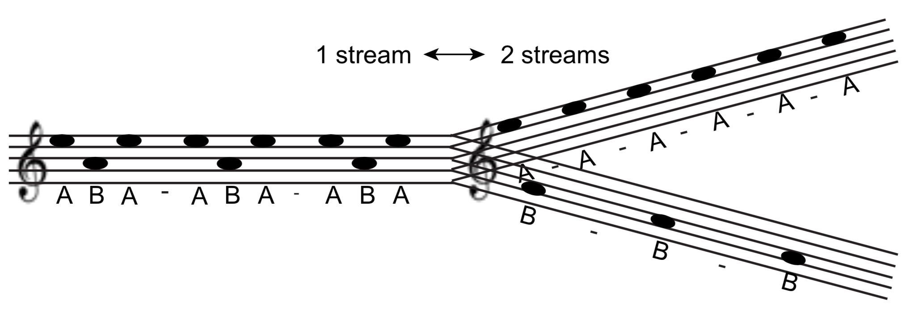
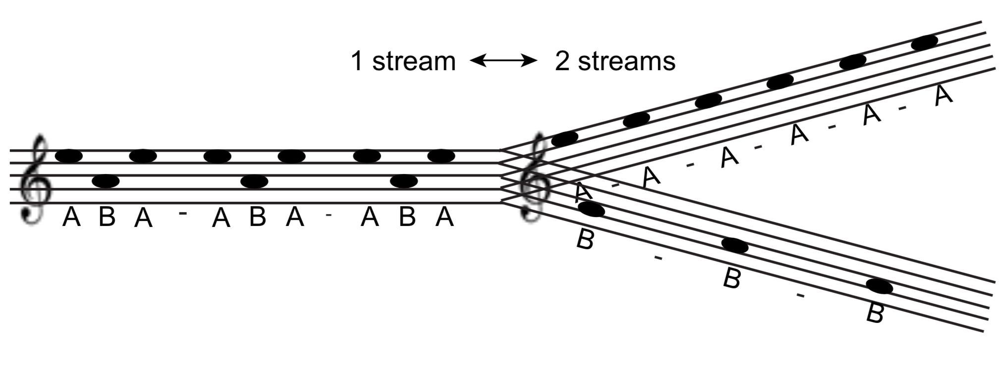

Understanding how perception arises from a sensory stimulus is a challenge in neuroscience. In this study, we analyzed human electrocorticographic recordings obtained during an auditory task, ran a battery of test and built a machine learning pipeline to predict perceptual behavior. Our research identified signatures of subjective perception and laid the foundation for further building dynamic models that capture the temporal evolution across multiple cortical areas.
Our research focused on building a series of multi-scale mathematical models to investigate the relationship between cell death and the inflammatory process for cartilage degeneration. We proposed three models under different scenarios of injuries, simulated the models, and validated the results with the experimental data. Our research provides helpful information which can not be easily obtained in biological experiments, and eventually lead to biomarker discovery and potential therapies.
I am a computational scientist with interests in mathematical modeling and statistics. For the past five years, I have been working in the fields of mathematical biology and computational neuroscience. I am currently on the job market and looking for new opportunities to turn data into knowledge and understanding.
 Same as the visual illusion, bistable auditory perception is a phenomenon in which listeners experience switching between percepts even listening to the same sound track. ABA tone triplets can elicit bistable auditory percepts.

In an ABA_ tone sequence, listeners' percepts switches between:
Same as the visual illusion, bistable auditory perception is a phenomenon in which listeners experience switching between percepts even listening to the same sound track. ABA tone triplets can elicit bistable auditory percepts.

In an ABA_ tone sequence, listeners' percepts switches between: